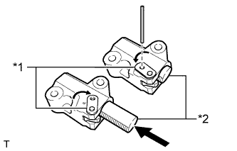

ENGINE UNIT > REASSEMBLY |
| 1. INSTALL STUD BOLT |
Install the timing chain cover stud bolts.
Using an E10 "TORX" socket wrench, install the 2 stud bolts as shown in the illustration.
 |
Install the No. 1 oil pan stud bolts.
Using E6 and E7 "TORX" socket wrenches, install the 3 stud bolts as shown in the illustration.
| 2. INSTALL RING PIN |
Using a plastic-faced hammer, tap in new ring pins to the timing chain cover.
| Item | Ring Pin Diameter | Specified Condition |
| Ring pin A | 13 mm (0.512 in.) | 7.5 to 8.5 mm (0.295 to 0.335 in.) |
| Ring pin B | 11 mm (0.433 in.) | 3.6 to 4.6 mm (0.142 to 0.181 in.) |
| 3. INSTALL OIL DRAIN PIPE SUB-ASSEMBLY |
Apply a light coat of engine oil to a new O-ring.
Install the O-ring to the oil drain pipe.
Install the oil drain pipe with the bolt.
| 4. INSTALL REAR CRANKSHAFT OIL SEAL |
Apply MP grease to the lip of a new rear crankshaft oil seal.
Using SST, tap in a rear crankshaft oil seal until its surface is flush with the rear engine oil seal retainer edge.
| 5. INSTALL REAR ENGINE OIL SEAL RETAINER |
Apply seal packing in a continuous line as shown in the illustration.
| *1 | Seal Packing |
 |
Install the rear engine oil seal retainer with the 6 bolts.
| 6. INSTALL OIL STRAINER SUB-ASSEMBLY |
Apply a light coat of engine oil to a new O-ring.
Install the O-ring to the oil strainer.
 |
Install the oil strainer with the 2 bolts.
| 7. INSTALL NO. 1 OIL PAN BAFFLE PLATE |
 |
Install the No. 1 oil pan baffle plate with the 7 bolts.
| 8. INSTALL NO. 1 OIL PAN SUB-ASSEMBLY |
Apply seal packing in a continuous line as shown in the illustration.
| *1 | Seal Packing |
Install the No. 1 oil pan with the 14 bolts and 2 nuts.
 | Bolt |
 | Nut |
| 9. INSTALL NO. 2 OIL PAN SUB-ASSEMBLY |
Apply seal packing in a continuous line as shown in the illustration.
| *1 | Seal Packing |
Install the No. 2 oil pan with the 12 bolts and 2 nuts.
| Bolt |
| Nut |
| 10. INSTALL NO. 1 HEAT EXCHANGER COVER |
 |
Apply seal packing in a continuous line as shown in the illustration.
| *1 | Seal Packing |
Install the No. 1 heat exchanger cover with the 12 bolts and 2 nuts.
| Item | Length | Thread Diameter |
| Bolt A | 20 mm (0.787 in.) | 8 mm (0.315 in.) |
| Bolt B | 70 mm (2.76 in.) | 8 mm (0.315 in.) |
| Bolt C | 16 mm (0.630 in.) | 6 mm (0.236 in.) |
| Bolt |
| Nut |
| 11. INSTALL VENTILATION PIPE GASKET |
Using SST, evenly tap in a new ventilation pipe gasket until its surface is flush with the lip of the ventilation pipe.
| 12. INSTALL OIL RETURN PIPE GASKET |
Install a new oil return pipe gasket.
| 13. INSTALL CYLINDER BLOCK WATER JACKET SPACER |
Install the 2 cylinder block water jacket spacers as shown in the illustration.
| *1 | UP Mark |
| 14. INSTALL CYLINDER HEAD GASKET |
Place the cylinder head gasket on the cylinder block surface with the front face of the Lot No. stamp upward.
| *1 | Lot No. |
| Engine Front |
| 15. INSTALL CYLINDER HEAD SUB-ASSEMBLY |
Place the cylinder head on the cylinder block.
Install the cylinder head bolts.
Apply a light coat of engine oil to the threads and under the heads of the cylinder head bolts.
Step 1:
Using a 10 mm bi-hexagon wrench, install and uniformly tighten the 10 cylinder head bolts with the plate washers in several steps in the sequence shown in the illustration.
Mark the front side of each cylinder head bolt head with paint.
Step 2:
Tighten the cylinder head bolts 90°.
Step 3:
Tighten the cylinder head bolts an additional 90°.
Check that the paint mark is now at a 180° angle to the front.
 |
Install and uniformly tighten the 2 bolts in the sequence shown in the illustration.
| 16. INSTALL NO. 2 CYLINDER HEAD GASKET |
 |
Place the cylinder head gasket on the cylinder block surface with the front face of the Lot No. stamp upward.
| *1 | Lot No. |
| Engine Front |
| 17. INSTALL CYLINDER HEAD SUB-ASSEMBLY LH |
Place the cylinder head on the cylinder block.
Install the cylinder head bolts.
Apply a light coat of engine oil to the threads and under the heads of the cylinder head bolts.
Step 1:
Using a 10 mm bi-hexagon wrench, install and uniformly tighten the 10 cylinder head bolts with the plate washers in several steps in the sequence shown in the illustration.
Mark the front side of each cylinder head bolt head with paint.
Step 2:
Tighten the cylinder head bolts 90°.
Step 3:
Tighten the cylinder head bolts an additional 90°.
Check that the paint mark is now at a 180° angle to the front.
Install and uniformly tighten the 2 bolts in the sequence shown in the illustration.
| 18. INSTALL VALVE STEM CAP |
Apply a light coat of engine oil to the valve stem caps.
Install the 32 valve stem caps to the cylinder head.
| 19. INSTALL VALVE LASH ADJUSTER ASSEMBLY |
Inspect the valve lash adjusters (Click here).
Install the 32 valve lash adjusters to the cylinder head.
| 20. INSTALL NO. 1 VALVE ROCKER ARM SUB-ASSEMBLY |
Apply engine oil to the valve lash adjuster tips and valve stem cap ends.
 |
Install the 32 No. 1 valve rocker arms as shown in the illustration.
| *1 | No. 1 Valve Rocker Arm |
| *2 | Valve Stem Cap |
| *3 | Valve Lash Adjuster |
| 21. INSTALL CAMSHAFT BEARING CAP RH |
Apply a light coat of engine oil to the camshaft journals, camshaft housing and camshaft bearing caps.
Install the No. 1 and No. 2 camshafts to the camshaft housing.
Confirm the marks and numbers on the camshaft bearing caps and place them in their proper positions and directions.
 |
Temporarily install the 10 bolts in the order shown in the illustration.
| 22. INSTALL CAMSHAFT HOUSING SUB-ASSEMBLY RH |
Install the valve rocker arms as shown in the illustration.
| *1 | Valve Rocker Arm |
| *2 | Valve Stem Cap |
| *3 | Valve Lash Adjuster |
 |
Apply seal packing in a continuous line as shown in the illustration.
| *1 | Seal Packing |
Install the camshaft housing, and then install the 18 bolts in the order shown in the illustration.
| *A | for Exhaust Side |
| *B | for Intake Side |
| *1 | Knock Pin |
| Bolt |
| Bolt A |
 |
Tighten the 10 bolts in the order shown in the illustration.
| 23. INSTALL CAMSHAFT BEARING CAP LH |
Apply a light coat of engine oil to the camshaft journals, camshaft housing and camshaft bearing caps.
Install the No. 3 and No. 4 camshafts to the camshaft housing.
Confirm the marks and numbers on the camshaft bearing caps and place them in their proper positions and directions.
 |
Temporarily install the 10 bolts in the order shown in the illustration.
| 24. INSTALL CAMSHAFT HOUSING SUB-ASSEMBLY LH |
Install the valve rocker arms as shown in the illustration.
| *1 | Valve Rocker Arm |
| *2 | Valve Stem Cap |
| *3 | Valve Lash Adjuster |
Apply seal packing in a continuous line as shown in the illustration.
| *1 | Seal Packing |
Install the camshaft housing, and then install the 18 bolts in the order shown in the illustration.
| *A | for Intake Side |
| *B | for Exhaust Side |
| *1 | Knock Pin |
| Bolt |
| Bolt A |
Tighten the 10 bolts in the order shown in the illustration.
| 25. INSTALL CRANKSHAFT TIMING GEAR KEY |
Install the crankshaft timing gear key.
| 26. INSTALL NO. 2 CHAIN TENSIONER ASSEMBLY |
 |
Install the No. 2 chain tensioner with the 2 bolts.
| *1 | Plunger |
| *2 | Pin |
| *a | Push |
While raising up the No. 2 chain tensioner, insert a pin with a diameter of 1.0 mm (0.0394 in.) into the hole to fix the tensioner in place.
| 27. INSTALL NO. 1 CHAIN SUB-ASSEMBLY RH |
Align the No. 1 chain's mark plates (orange) with the camshaft timing gear's timing mark and attach the chain to the gear as shown in the illustration.
| *1 | Mark Plate (Orange) |
| *2 | Timing Mark |
 |
Align the No. 1 chain's mark plate (orange) with the crankshaft timing gear's timing mark and attach the chain to the gear as shown in the illustration.
| *1 | Timing Mark |
| *2 | Mark Plate (Orange) |
Align the No. 2 chain's mark plates (yellow) with the timing marks (1-dot marks) of the camshaft timing gear and camshaft timing exhaust gear, and attach the No. 2 chain to the gears as shown in the illustration.
| *1 | Timing Mark |
| *2 | Mark Plate (Yellow) |
Install the crankshaft timing sprocket RH to the crankshaft.
Align the knock pin of the No. 1 camshaft with the pin hole of the camshaft timing gear and install the camshaft timing gear.
Using the hexagonal portion of the No. 2 camshaft, align the knock pin of the No. 2 camshaft with the pin hole of the camshaft timing exhaust gear and install the camshaft timing exhaust gear.
Remove the pin from the No. 2 chain tensioner.
| 28. INSTALL NO. 1 CHAIN VIBRATION DAMPER RH |
Install the No. 1 chain vibration damper RH with the 2 bolts.
| 29. INSTALL CHAIN TENSIONER SLIPPER RH |
| 30. INSTALL NO. 1 CHAIN TENSIONER ASSEMBLY RH |
Move the stopper plate upward to release the lock and push the plunger deep into the No. 1 chain tensioner.
| *1 | Stopper Plate |
| *2 | Plunger |
Move the stopper plate downward to set the lock and insert a hexagon wrench into the hole of the stopper plate.
Install the No. 1 chain tensioner with the 2 bolts.
Remove the hexagon wrench from the No. 1 chain tensioner.
| 31. INSTALL NO. 3 CHAIN TENSIONER ASSEMBLY |
 |
Install the No. 3 chain tensioner with the 2 bolts.
| *1 | Pin |
| *2 | Plunger |
| *a | Push |
While pushing down the No. 3 chain tensioner, insert a pin with a diameter of 1.0 mm (0.0394 in.) into the hole to fix the tensioner in place.
| 32. INSTALL NO. 1 CHAIN SUB-ASSEMBLY LH |
 |
Align the No. 1 chain's mark plates (orange) with the camshaft timing gear's timing mark and attach the chain to the gear as shown in the illustration.
| *1 | Mark Plate (Orange) |
| *2 | Timing Mark |
 |
Align the No. 1 chain's mark plate (orange) with the crankshaft timing gear's timing mark and attach the chain to the gear as shown in the illustration.
| *1 | Timing Mark |
| *2 | Mark Plate (Orange) |
 |
Align the No. 2 chain's mark plates (yellow) with the timing marks (1-dot marks) of the camshaft timing gear and camshaft timing exhaust gear, and attach the No. 2 chain to the gears as shown in the illustration.
| *1 | Timing Mark |
| *2 | Mark Plate (Yellow) |
Install the crankshaft timing sprocket LH to the crankshaft.
Align the knock pin of the No. 3 camshaft with the pin hole of the camshaft timing gear and install the camshaft timing gear.
Using the hexagonal portion of the No. 4 camshaft, align the knock pin of the No. 4 camshaft with the pin hole of the camshaft timing exhaust gear and install the camshaft timing exhaust gear.
Remove the pin from the No. 3 chain tensioner.
| 33. INSTALL NO. 1 CHAIN VIBRATION DAMPER LH |
Install the No. 1 chain vibration damper with the 2 bolts.
Remove the hexagon wrench from the No. 1 chain tensioner.
| 34. INSTALL CHAIN TENSIONER SLIPPER LH |
| 35. INSTALL NO. 1 CHAIN TENSIONER ASSEMBLY LH |
|  |
Move the stopper plate upward to release the lock and push the plunger deep into the No. 1 chain tensioner.
| *1 | Stopper Plate |
| *2 | Plunger |
Move the stopper plate downward to set the lock and insert a hexagon wrench into the hole of the stopper plate.
Install a new gasket and the No. 1 chain tensioner with the 2 bolts.
| 36. TIGHTEN CAMSHAFT TIMING GEAR ASSEMBLY |
for Bank 1:
Using a wrench to hold the hexagonal portion of the No. 3 camshaft, install the camshaft timing gear bolt.
| *a | Hold |
| Turn |
 |
Using a wrench to hold the hexagonal portion of the No. 4 camshaft, install the camshaft timing exhaust gear bolt.
| *a | Hold |
| Turn |
for Bank 2:
Using a wrench to hold the hexagonal portion of the No. 1 camshaft, install the camshaft timing gear bolt.
| *a | Hold |
| Turn |
 |
Using a wrench to hold the hexagonal portion of the No. 2 camshaft, install the camshaft timing exhaust gear bolt.
| *a | Hold |
| Turn |
| 37. CHECK NO. 1 CYLINDER TO TDC/COMPRESSION |
Temporarily install the pulley set bolt.
Rotate the crankshaft clockwise and check that the timing marks on the crankshaft timing gear and camshaft timing gears are as shown in the illustration.
Remove the crankshaft pulley set bolt.

| *1 | Crankshaft Timing Gear Key | *2 | Timing Mark |
| *a | Toward Ceiling | *b | Timing Mark Position |
| *c | Knock Pin Position | *d | Approximately 2° |
| *e | Approximately 45° | *f | Approximately 16° |
| *g | Approximately 18° | *h | Approximately 32° |
| 38. INSTALL WATER INLET PIPE |
Apply soapy water to 2 new O-rings and install them to the inlet pipe.
Install the inlet pipe to the No. 1 heat exchanger cover.
| 39. INSTALL TIMING CHAIN COVER SUB-ASSEMBLY |
Apply a light coat of engine oil to a new gasket.
Install the gasket to the cylinder block.
Apply a light coat of engine oil to a new O-ring.
Install the O-ring to the oil pan.
Apply seal packing in a continuous line to the timing chain cover as shown in the following illustration.

| *1 | Continuous Line Area | *2 | Dashed Line Area |
| *3 | Diagonal Line Area | - | - |
| Area | Seal Packing Diameter | Application Position from Inside Edge of Cover |
| Continuous line area | 3.0 to 4.0 mm (0.118 to 0.157 in.) | 2.5 mm (0.0984 in.) |
| Dashed line area | 6.4 mm (0.252 in.) or more, or within OK area shown in illustration | 7.0 mm (0.276 in.) |
| Diagonal line area | 3.0 to 4.0 mm (0.118 to 0.157 in.) | 5.5 mm (0.217 in.) |
| *1 | Seal Packing Thickness mm (in.) |
| *2 | Seal Packing Width mm (in.) |
| *3 | Seal Packing Thickness |
| *4 | Seal Packing Width |
 | OK Area |
Align the oil pump drive rotor spline and crankshaft as shown in the illustration and install the chain cover.
 |
Temporarily install the 26 bolts and nut.
| Item | Length | Thread Diameter |
| Bolt A | 25 mm (0.984 in.) | 8 mm (0.315 in.) |
| Bolt B | 55 mm (2.17 in.) | 8 mm (0.315 in.) |
| Bolt C | 70 mm (2.76 in.) | 8 mm (0.315 in.) |
| Bolt D | 35 mm (1.38 in.) | 10 mm (0.394 in.) |
| Bolt E | 55 mm (2.17 in.) | 10 mm (0.394 in.) |
| Bolt F | 80 mm (3.15 in.) | 10 mm (0.394 in.) |
 |
Tighten the 3 bolts in several steps in the sequence shown in the illustration.
Temporarily install the fan bracket with the 5 bolts.
| Item | Length | Thread Diameter |
| Bolt A | 70 mm (2.76 in.) | 8 mm (0.315 in.) |
| Bolt B | 80 mm (3.15 in.) | 10 mm (0.394 in.) |
| Bolt A |
| Bolt B |
 |
Temporarily install the belt tensioner with the bolt and 6 mm hexagon bolt.
| Bolt |
| 6 mm Hexagon Bolt |
Tighten the 8 bolts labeled 4 to 11 in several steps in the sequence shown in the illustration.
 |
Tighten the 22 bolts and nut labeled 12 to 34 in several steps in the sequence shown in the illustration.
 |
 | Labeled A |
Check the torque of each bolt and nut again.
| 40. INSTALL WATER PUMP ASSEMBLY |
 |
Install a new gasket and the water pump with the 8 bolts shown in the illustration.
| 41. INSTALL FRONT CRANKSHAFT OIL SEAL |
Apply MP grease to the lip of a new front crankshaft oil seal.
 |
Using SST and a hammer, tap in the front crankshaft oil seal to a depth between 0 and 1.0 mm (0 to 0.0394 in.) from the timing chain cover edge.
| 42. INSTALL CRANKSHAFT TIMING GEAR KEY |
Install the crankshaft timing gear key to the crankshaft.
| 43. INSTALL SPARK PLUG TUBE GASKET |
Using a cutter knife, cut off the seal part of the removed spark plug tube gasket.
| *a | Area to cut off |
Using the removed spark plug tube gasket and a hammer, tap in a new spark plug tube gasket until it stops.
| *1 | Ventilation Baffle Plate Claw |
| *2 | Removed Spark Plug Tube Gasket |
| *3 | New Spark Plug Tube Gasket |
Apply a light coat of MP grease to the spark plug tube gasket lip.
Return the 4 ventilation baffle plate claws to their original positions.
| 44. INSTALL OIL CONTROL VALVE FILTER |
for Bank 1:
Install the oil control valve filter to the cylinder head cover.
| *1 | Cylinder Head Cover Spacer |
| *2 | New Gasket |
| *3 | Oil Control Valve Filter |
Install a new gasket and the cylinder head cover spacer with the 3 bolts.
for Bank 2:
Install the oil control valve filter to the cylinder head cover.
| *1 | Cylinder Head Cover Spacer |
| *2 | New Gasket |
| *3 | Oil Control Valve Filter |
Install a new gasket and the cylinder head cover spacer with the 3 bolts.
| 45. INSTALL CYLINDER HEAD COVER SUB-ASSEMBLY RH |
Install 5 new gaskets to the camshaft bearing caps. (No. 1, No. 3).
Install the cover gasket to the cylinder head cover.
Apply seal packing as shown in the illustration.
 | Seal Packing |
Install a new seal washer to the bolt.
Temporarily install the cylinder head cover with the 14 bolts. Tighten the bolts uniformly in several steps.
| Item | Length | Thread Diameter |
| Bolt A | 70 mm (2.76 in.) | 8 mm (0.315 in.) |
| Bolt B | 25 mm (0.984 in.) | 6 mm (0.236 in.) |
| Bolt A |
| Bolt B |
| 46. INSTALL CYLINDER HEAD COVER SUB-ASSEMBLY LH |
Install 5 new gaskets to the camshaft bearing caps (No. 2, No. 3).
Install the cover gasket to the cylinder head cover.
 |
Apply seal packing as shown in the illustration.
| Seal Packing |
Install a new seal washer to the bolt.
Temporarily install the cylinder head cover with the 14 bolts. Tighten the bolts uniformly in several steps.
| Item | Length | Thread Diameter |
| Bolt A | 70 mm (2.76 in.) | 8 mm (0.315 in.) |
| Bolt B | 25 mm (0.984 in.) | 6 mm (0.236 in.) |
| Bolt A |
| Bolt B |
| 47. INSTALL FRONT WATER BY-PASS JOINT |
Install 2 new gaskets and the water by-pass joint with the 4 nuts.
| 48. INSTALL WATER INLET HOUSING |
Install a new gasket to the timing chain cover.
Install the water inlet housing with the 3 bolts.
| 49. INSTALL CYLINDER BLOCK WATER DRAIN COCK SUB-ASSEMBLY |
Apply adhesive to 2 or 3 threads of the cylinder block water drain cocks.
Install the cylinder block water drain cocks.
| *A | for Bank 1 |
| *B | for Bank 2 |
| *a | Front |
Tighten the cylinder block water drain cocks up to an additional 360° so that the cylinder block water drain cock pipes are within the range shown in the illustration.
Install the water drain cock plugs to the water drain cocks.
| 50. INSTALL CAMSHAFT TIMING OIL CONTROL VALVE ASSEMBLY |
for Bank 1:
Apply a light coat of engine oil to 2 new O-rings.
Install the 2 O-rings to the 2 camshaft timing oil control valves.
Install the 2 camshaft timing oil control valves with the 2 bolts.
for Bank 2:
Apply a light coat of engine oil to 2 new O-rings.
Install the 2 O-rings to the 2 camshaft timing oil control valves.
 |
Install the 2 camshaft timing oil control valves with the 2 bolts.
| 51. INSTALL CRANKSHAFT POSITION SENSOR |
Install the crankshaft position sensor with the bolt.
Connect the crankshaft position sensor connector.
| 52. INSTALL CRANKSHAFT POSITION SENSOR PROTECTOR |
Install the crankshaft position sensor protector with the 2 bolts.
| 53. INSTALL CAMSHAFT POSITION SENSOR |
Install the camshaft position sensor with the bolt.
Connect the camshaft position sensor connector.
| 54. INSTALL VVT SENSOR |
Install the 4 VVT sensors with the 4 bolts.
Connect the 4 VVT sensor connectors.
| 55. INSTALL KNOCK SENSOR |
 |
Install the 4 knock sensors with the 4 bolts so that the knock sensors are angled as shown in the illustration.
| *A | for Bank 2 Sensor 1 |
| *B | for Bank 1 Sensor 1 |
| *C | for Bank 2 Sensor 2 |
| *D | for Bank 1 Sensor 2 |
| Front |
 | Upper Side |
 | Rear |
Connect the 4 knock sensor connectors.
| 56. INSTALL SPARK PLUG |
Using a 16 mm plug wrench, install the 8 spark plugs.
| 57. INSTALL OIL FILLER CAP HOUSING |
Align the protrusion of a new gasket with the cutout of the oil filler cap housing and install the gasket to the oil filler cap housing.
| *1 | Cutout |
| *2 | Protrusion |
 |
Install the oil filler cap housing with the 2 bolts.
| 58. INSTALL OIL FILLER CAP SUB-ASSEMBLY |
Install the gasket to the oil filler cap.
Install the oil filler cap.
| 59. INSTALL CRANKSHAFT PULLEY |
 |
Align the key groove of the pulley with the pulley set key, and slide on the pulley to install it.
Using SST, install the pulley set bolt.
| *a | Hold |
| Turn |
| 60. INSTALL OIL FILTER BRACKET SUB-ASSEMBLY |
Apply a light coat of engine oil to 2 new O-rings.
Install the 2 O-rings to the timing chain cover.
Install the oil filter bracket with the 2 nuts and 2 bolts.
| Item | Length |
| Bolt A | 30 mm (1.18 in.) |
| Bolt B | 80 mm (3.15 in.) |
| Bolt A |
| Bolt B |
| Nut |
| 61. INSTALL OIL FILTER ELEMENT |
Clean the inside of the oil filter cap, its threads and O-ring groove.
Apply a small amount of engine oil to a new O-ring and install the O-ring to the oil filter cap.
Set a new oil filter element in the oil filter cap.
Remove any dirt or foreign matter from the installation surface and inside of the engine.
 |
Reapply a small amount of engine oil to the O-ring of the oil filter cap. Align the oil filter cap with the oil filter bracket so that the cutout portion of the cap threads is in a position 90° from the groove in the bracket, and then temporarily install the cap.
| *a | Cutout Portion |
| *b | Groove |
Using SST, tighten the oil filter cap.
| *1 | Oil Filter Bracket Clip |
| *a | No Clearance |